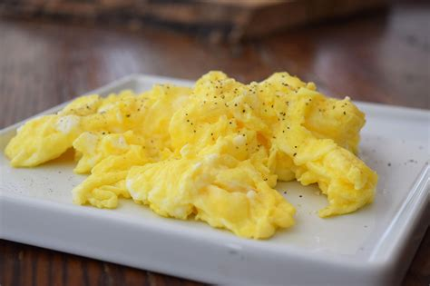

Scrambled Eggs

Scrambled Eggs is an incredibly simple dish describing the method of cooking eggs, with a little seasoning.
Ingredients:
- 2 eggs
- 2 tablespoons sliced Cheddar cheese
- 2 thin slices ham (Optional)
- 1 teaspoon heavy whipping cream
- 1/2 teaspoon butter
Steps:
- Whisk eggs together in small bowl until smooth.
- Mix in cheddar cheese, ham, and heavy cream.
- Melt butter in skillet over medium heat.
- Pour in egg mixture; cook and stir until set but still moist (3-5 mins.).